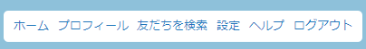
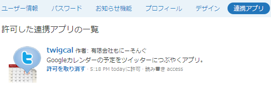

TwiGcal登録の解除方法
ここではTwiGcalの登録解除方法を説明いたします。
Twitterアプリの削除

Twitterのページに行きます。
右上のメニューから「設定」をクリックします。

中間部分のメニューから「連携アプリ」をクリックします。
TwiGcalの「許可を取り消す」リンクをクリックします。
以上でアプリの削除が完了です。
GMailフィルタの解除

GMailのページに行きます。
右上のメニューから「設定」をクリックします。
「フィルタ」のタブをクリックします。
「twigcal@monysong.com」へのフィルタの横の「削除」リンクをクリックします。
以上でフィルタの削除が完了です。
Gmail転送アドレスの削除
「メール転送とPoP/IMAP」のタブをクリックします。
「twigcal@monysong.comの削除」を選択します。
以上でGmail転送アドレスの削除が完了です。